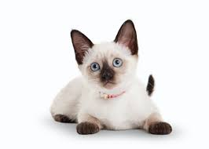
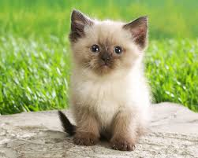
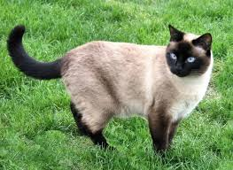

Largo y ágil, palabras como elegante y grácil se inventaron para definir al gato siamés. Se trata de una raza llamativa y reconocible, hasta para quienes no saben nada de gatos o incluso no les tienen demasiado aprecio. El siamés es afectuoso y sociable, y puede adaptarse sin problemas a la vida familiar. No obstante, también es muy curioso y activo, así que más vale que lo mantengas entretenido con juegos en los que tenga que ir a buscar objetos que le lances o con largos paseos por el barrio.
El siamés tiene una complexión alargada y atlética, que sustentan unas patas esbeltas con pies pulcros y ovalados. Sus orejas son grandes y puntiagudas, lo que le confiere una expresión inteligente, que sigue las líneas de su cabeza triangular. Los ojos tienen forma almendrada y se inclinan hacia la nariz, y su cola es larga, estrecha y recta. El manto del siamés es corto y fino, ceñido al cuerpo, y se presenta en colores pálidos, con sombras más oscuras en las partes distales, es decir, la cara, las orejas, las patas y la cola. En cuanto a su aspecto, existen dos variedades de gato siamés: el siamés tradicional, regordete y con la cabeza redondeada, y el siamés moderno, muy esbelto y con la cabeza más cuneiforme.
Este gato es increíblemente inteligente, afectuoso y obstinado, y se le considera el extrovertido del mundo felino. Tiende a establecer vínculos estrechos con una persona, y suele ser muy locuaz, con una voz grave y contundente. No es un gato que le guste a todo el mundo, sino que es atractivo para un tipo de persona muy concreto.

A causa de su carácter tan dependiente y apegado a su humano, el siamés sufre con frecuencia ansiedad por separación y puede sentirse mejor si está con otro semejante o, mejor aún, en un hogar donde haya gente la mayoría del tiempo.